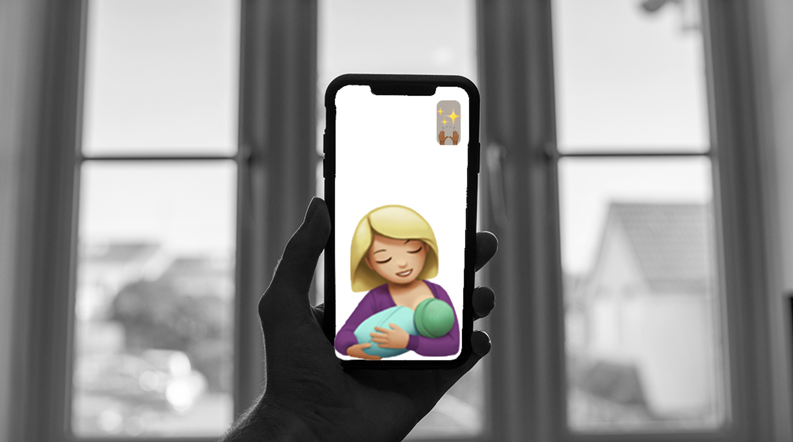

VOL 1. THE INTIMACY OF FAMILY


Technology has transformed the way in which families communicate with eachother. Children grow up, move out and move away from home, and the face-to-face interactions that once filled a home is now replaced with watching their life from afar. We view special moments through a screen, lacking the sense of intimacy that comes along with being in the same space.